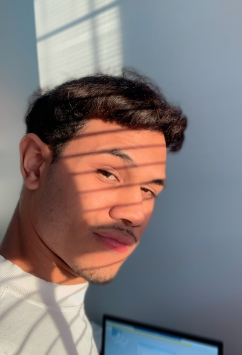

MINHAS ESPECIALIDADES.
Front end
- HTMl
- CSS
- Java Script
Quem nunca se admirou com as belezas de Software,sites, programas ou jogos? Geralmente quem está de olho em trazer maior perfeição são desenvolvedores Front end onde trazemos a melhor experiência. Enquanto nessa parte resolvi ter conhecimento na linguagem de programação Java Script.
Back end
- Python
- SQL
Entender como funciona cada parte do sistema de forma responsiva, ou como falam o lado escuro da programação. Onde eu optei em ter maior conhecimento em duas liguagens que podem estar se efetivando de melhor desempenho, sendo uma delas umas das linguagens mais moderna no mercado.
Full stackp
Para fazer crescer seu negócio, posso estar te ajudando a desenvolver um projeto com sua cara! com minha capacidade de conhecimento em diversas ferramentas e minhas habilidades como um full stake. Já pensou como vai ser seu site ou App?
. .
MUITO PLAZER, SOU JOÃO MARQUÊS.
Olá! Meu nome é João Marquês, tenho 19 anos e sou um entusiasta apaixonado por tecnologia. Atualmente, estudo Engenharia de Software, onde mergulho profundamente no mundo da criação e desenvolvimento de sistemas inovadores. Desde cedo, desenvolvo sites, aplicativos e softwares, utilizando uma variedade de linguagens de programação para transformar ideias em realidade digital.
Minha jornada começou com a curiosidade natural de entender como as coisas funcionam no universo digital. Essa curiosidade rapidamente se transformou em uma paixão pela programação, que me levou a explorar linguagens como Python, JavaScript, C++, entre outras. Com cada nova linguagem, descobri novas formas de resolver problemas e criar soluções eficientes e elegantes.
O desenvolvimento de software para mim vai além do simples código. É a arte de combinar lógica, criatividade e funcionalidade para proporcionar experiências que impactam positivamente a vida das pessoas. Através dos projetos que desenvolvo, busco não apenas implementar funcionalidades, mas também criar soluções que sejam intuitivas, eficazes e centradas no usuário.
No meu portfólio, você encontrará uma variedade de projetos que refletem minha dedicação ao aprendizado contínuo e ao aprimoramento das minhas habilidades. Desde aplicações web responsivas até sistemas complexos de backend, cada projeto representa um desafio superado e uma oportunidade de crescimento profissional.
Além do desenvolvimento técnico, valorizo profundamente a colaboração e o trabalho em equipe. Acredito que as melhores soluções surgem quando diferentes mentes se unem em busca de um objetivo comum. Estou sempre aberto a novas ideias, feedback construtivo e novas oportunidades de aprendizado.
Em resumo, meu objetivo é não apenas acompanhar, mas também moldar o futuro da tecnologia. Estou comprometido em continuar explorando novas tecnologias, metodologias ágeis e práticas de desenvolvimento que me permitam criar impacto positivo através do software.
Se você está em busca de um desenvolvedor entusiasmado, apaixonado por tecnologia e com habilidades sólidas em Engenharia de Software, ficarei muito feliz em conversar e discutir como posso contribuir para o seu projeto. Vamos transformar ideias em realidade juntos!
